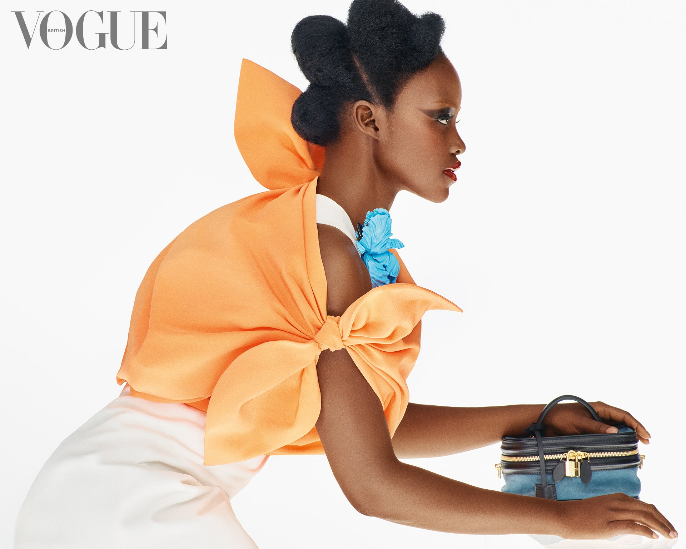

| ARTICLES | A PROPOS | CONTACT |
|

Fashion that can be defined initially as the social systemic production, consumption and institutionalization of novelty is a cultural phenomenon that integrates culture, the individual and the economy. Fashion is both an idea and an ideal.
Yet it finds expression materially and visually in forms coded by color, shape, texture and branding, and must be produced and circulated within cultural fields integrating local and global systems. Fashion is not just a social process pertaining to clothing and address. It is more of an expressive sensibility favoring novelty and individuality, which energizes facets of both economic production and personal consumption.
There are a number of important reasons why any analysis of contemporary culture must come to grips with the logic of fashion and its centrality to our everyday experiences. In general, fashion is fundamental to culture because it offers aesthetic forms in fields such as dress and clothing, philosophy and religion, music, habits and customs, through which individuals attach to, or demonstrate their difference from, various communities.
Fashion Culture and Identity
As a cultural process, fashion is responsible for locating individuals within a constantly changing forest of objects, people, events, styles and practices to which they relate, about which they form opinions and which symbolically help to locate them within various social strata and communities. In this way, being 'in fashion', indifferent to it or actively claiming to reject fashion becomes an important technique for individuals to establish their social difference and individuality.
Georg Simmels Thoughts about Fashion
The sociologist Georg Simmel (1997), writing in a famous essay published over a century ago, pointed out that fashion was not just about clothing styles, but was in fact a basic process that propelled modern life, and in turn its structuring of the psycho-social development of the modern person.
Georg Simmel situates fashion away from any one realm of social life and argues that fashion refers to a general phenomenon of all modern societies. In essence, fashion is a type of social horizon point where individual interests come up against the collective, and where the stability and conservatism of social customs are challenged by new and innovative aesthetic and behavioral forms.
Any object can thus represent fashion whether it be clothes, ideas or habits but in essence it refers to any field of social action where the dynamic, sometimes antagonistic process of individual formation and collective integration is evident.
To quote Simmel:Fashion represents nothing more than one of the many forms of life by the aid of which we seek to combine . . . the tendency toward social equalization with the desire for individual differentiation and change.
|
|
19 years of Vogue US covers |
Models Birth Countries |
|
Visualisation 3 |
Visualisation 4 |
|